Austral Hospital’s Cardiology department has asked for a tool that would be able to predict the procedure prescribed to a patient based on their medical history. To do this, we have been given access to their dataset, which initially consisted of 706 cardiology patients. However, emergency procedures cannot be predicted, so they were all removed from the dataset and it was narrowed down to 385. In order to develop an accurate model for our predictor, we needed to understand what variables in our dataset were significant factors. First a preliminary study was undertaken, with a bibliography that can be found down below, consisting of medical journals and papers. Then, before building the predictor, we analyzed some of the variables we had concluded would carry weight when it came to deciding what procedure would be done.
Understanding what procedures are most common is essential for any analysis. This is especially the case when the end goal is to create a model that predicts the procedure needed given a patient’s medical report.
We first analyzed the percentage of patients that had undergone each procedure, according to gender.
From these tables, it is evident that surgery is the most common procedure for women: 60% of all women had to have surgery, while only 38% men. For men,the most common procedure was angioplasty, with 61% having undergone it.
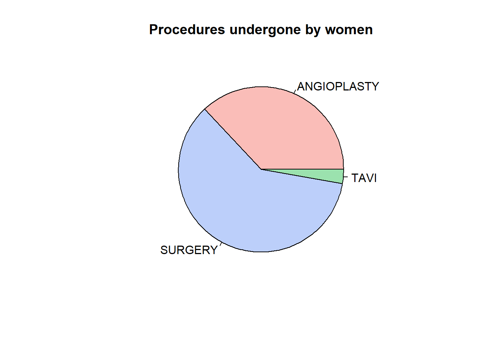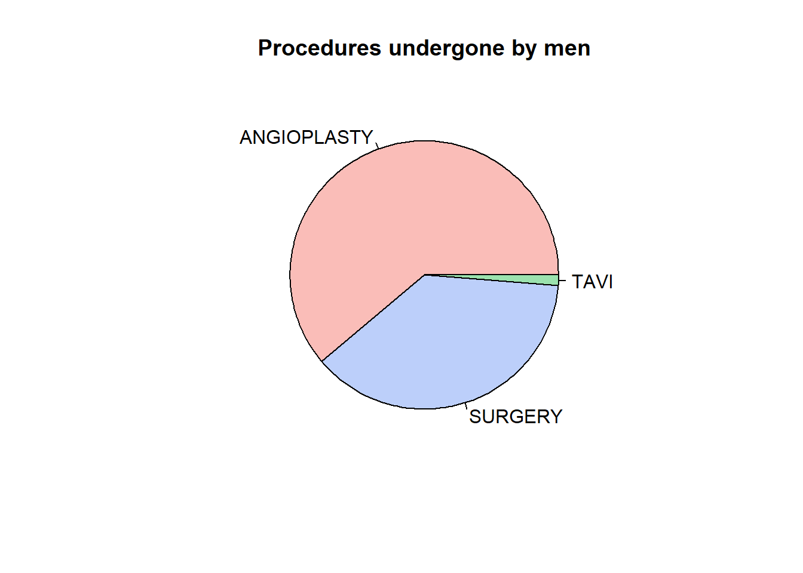
In order to study how age would impact the procedure performed on patients, we first plotted the age distribution to get a general idea of how our population is distributed.
The following density plot shows us that the majority of people in our sample are between 50 and 80 years old.
This shows us that there is a tendency towards older patients in regards to cardiovascular issues.
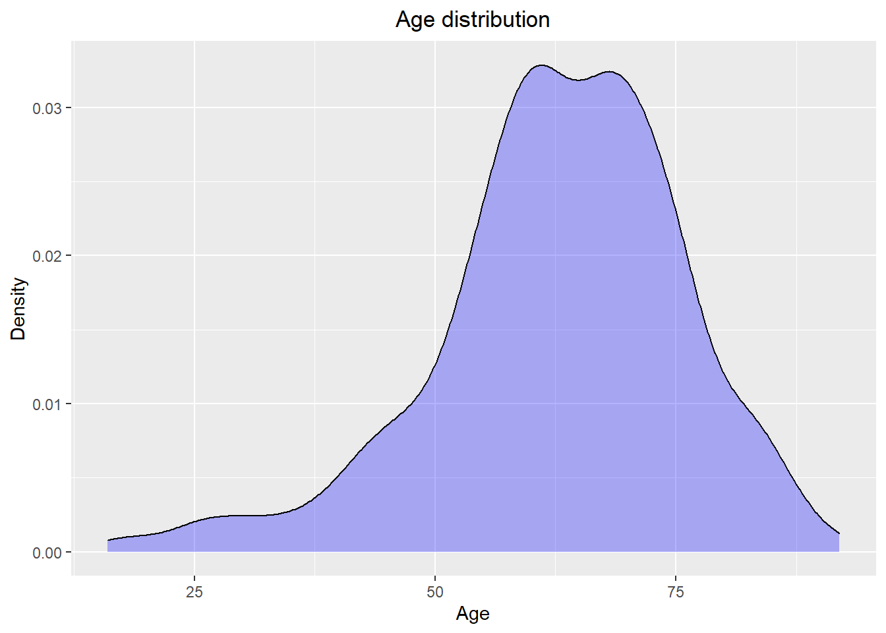
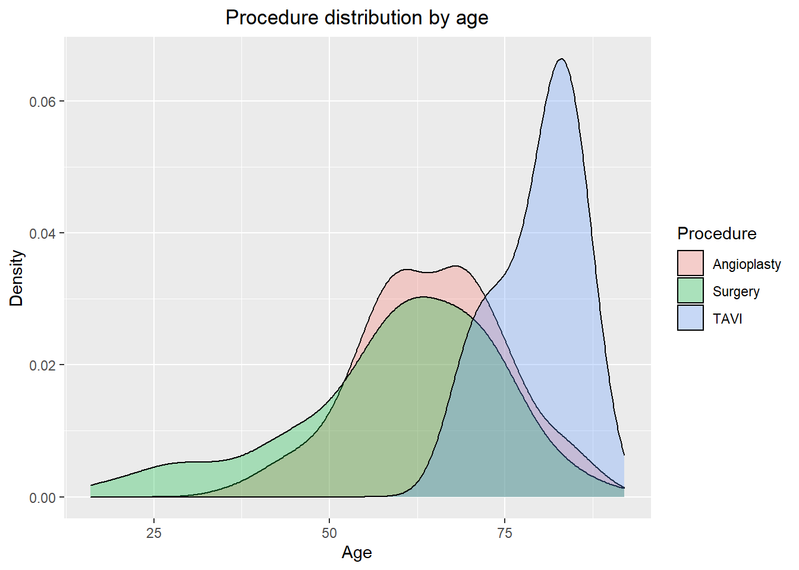
The density graph shows that both surgery and angioplasty behave with a relatively normal distribution, with the majority of procedures concentrated around ages 50-75, which is consistent with the overall age distribution of our sample. However, TAVI is performed only on patients older then 60, with most patients of 75+ years of age.
This suggests that age is a determining factor in the decision on what procedure to perform on a patient.
It is also key to note that out of the two most common procedures, angioplasty and surgery, angioplasty is preferred when the patient is older. This ties in with the greater risks involved in the more invasive open surgery.
Since women had different complications than men, we decided to go one step forward and analyze the procedure distribution by age in women.
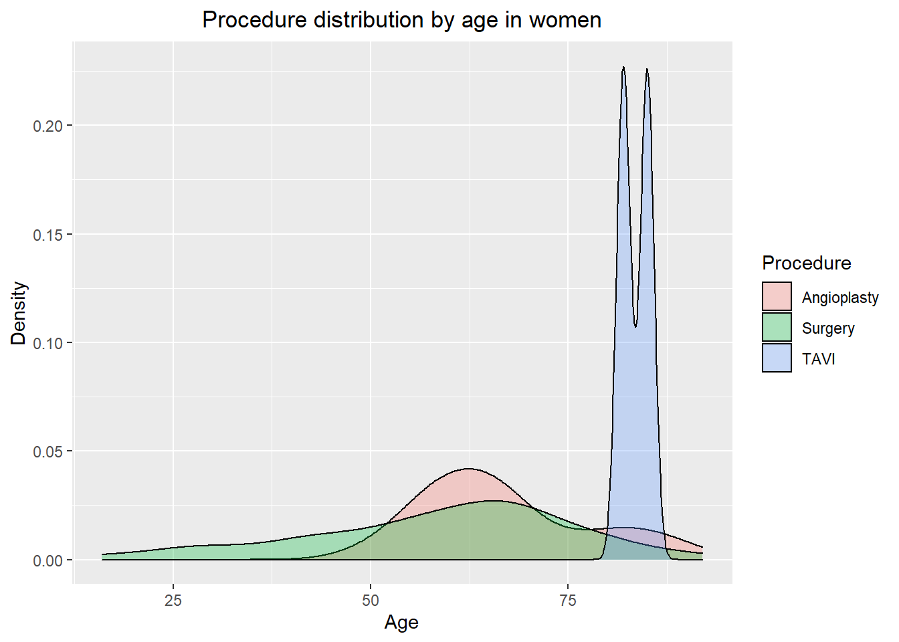
According to the Argentine Society of Arterial Hypertension, arterial hypertension affects between 25-30% of the women in Argentina and this amount increases with age as we can see in the density graph especially after menopause with almost approaching 80% of women older than 70 years. Menopause causes an increment in the arterial pressure due to the changes of the hormones during this period. The higher arterial pressure can end up as an arterial hypertension that would need to be treated.
That explains this density graph where we can see that TAVI is performed on an even older fraction of women and angioplasty is preferred over surgery in older patients because there is a higher density of all types of procedures performed on women after the age of 50. Which is linked to the greater risk of cardiovascular disease in post-menopausal women.
D.M.S., & D.J.Z. (2010). Hipertensión en la Mujer. Sociedad Argentina de Hipertensión Arterial. Published.
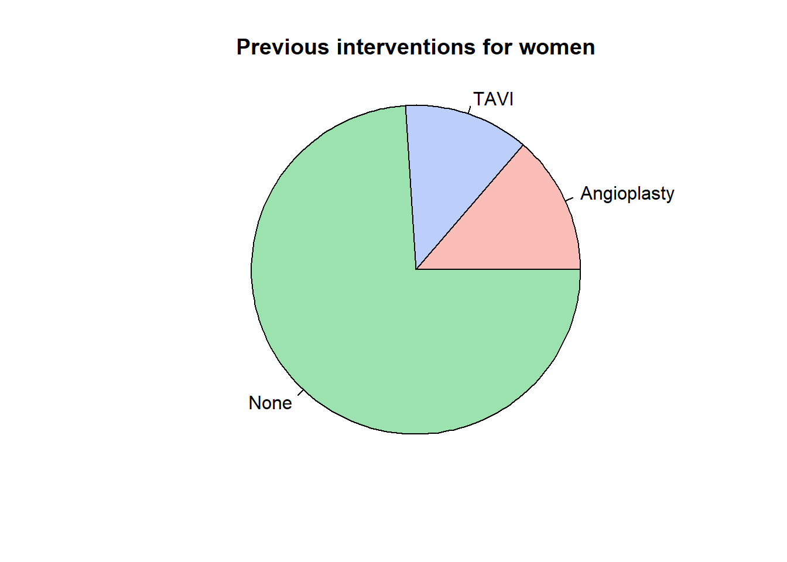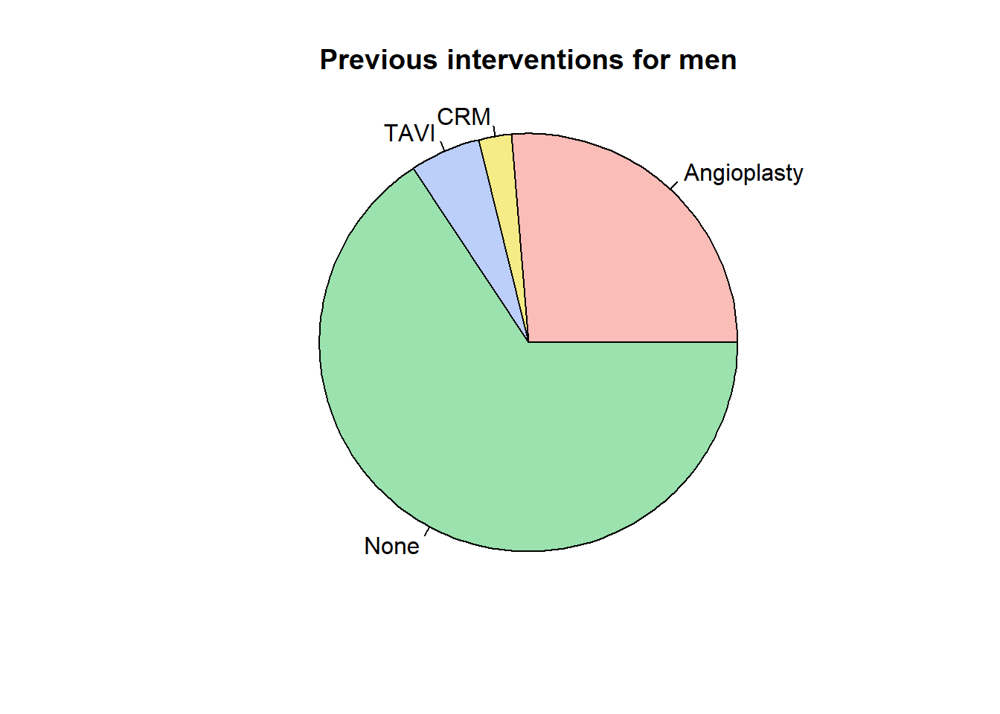
The majority of our sample had not undergone a previous intervention.
In the case of our male patients, it is relevant to point out that the most common previous intervention was angioplasty, which might indicate a possible correlation with angioplasty being the most common procedure performed on men. The idea that a previous angioplasty would lead to a decision to perform another angioplasty instead of surgery would be interesting to explore further.
On the other hand, we can observe that the amount of patients with no previous intervention is bigger in women than in men. An explanation could be that men tend to have a higher tendency to have heart diseases than women because of their higher proportion of risk factors such as smoking, hypertension, diabetes, etc. For example, men have a higher hypertension than pre-menopausal women which can end up as a cardiovascular disease.
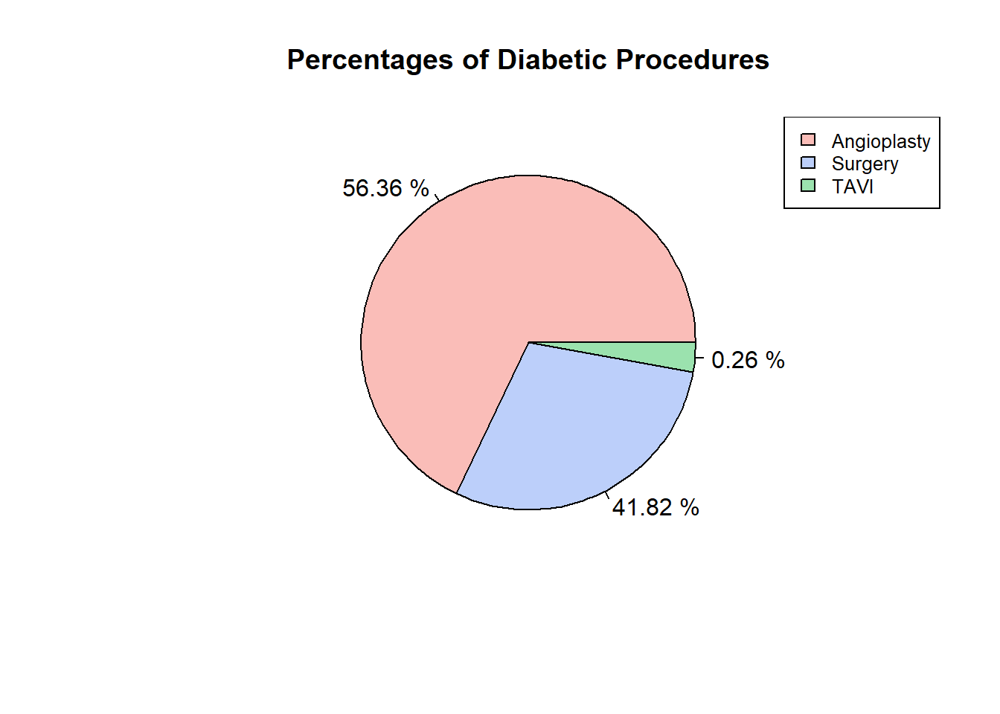
A close link exists between diabetes and cardiovascular disease . This disease is the most prevalent cause of mortality and morbidity in diabetic populations. Cardiovascular disease death rates in the United States are 1.7 times higher among adults (> 18 years) with diabetes than those without diagnosed with diabetes, largely due to an increased risk of stroke and myocardial infarction. This is due to a high blood glucose from diabetes, which can damage your blood vessels and the nerves that control your heart and blood vessels. Over time, this damage can lead to heart disease. Some of the most known factors regarding complications are hypertension, dyslipidemia, diabetic cardiomyopathy, cardiovascular autonomic neuropathy or myocardial infarction, among many others. This increased risk of cardiovascular disease mortality in diabetic patients is found in both men and women. The relative risk for cardiovascular disease morbidity and mortality in adults with diabetes ranges from 1 to 3 in men and from 2 to 5 in women compared to those without diabetes.
Patients with diabetes have an increased risk of coronary artery disease, and are at an increased risk of mortality and morbidity with coronary revascularization procedures. This is due to various modifications associated with diabetes such as endothelial dysfunction (an abnormal response of the cells of the vascular wall), and a greater risk of thrombotic events. It was believed that surgery was the best treatment for this type of patients, but a recent study shows the opposite, which supports the results in the pie chart presented in this section. The death rate of diabetic patients treated by angioplasty (65.5%) was significantly lower regarding the revascularization method, which can have an impact on survival, than that of patients treated by surgery (80.6%).
The development and widespread use of stents and glycoprotein IIb/IIIa receptor inhibiting drugs have improved the clinical evolution of diabetics treated with angioplasty. New angioplasty techniques, such as brachytherapy and drug-eluting stents, are likely to significantly improve the results of percutaneous interventions in diabetics, thus allowing the indications for angioplasty in diabetics to be extended even further in the near future.
Wild S, Roglic G, Green A, Sicree R, King H. Global prevalence of diabetes: estimates for the year 2000 and projections for 2030. Diabetes Care. 2004.
Aguirre F, Brown A, Cho NH, Dahlquist G, Dodd S, Dunning T, Hirst M, Hwang C, Magliano D, Patterson C. IDF Diabetes Atlas. 2013.
American Diabetes Association. Economic costs of diabetes in the U.S. In 2007. Diabetes Care
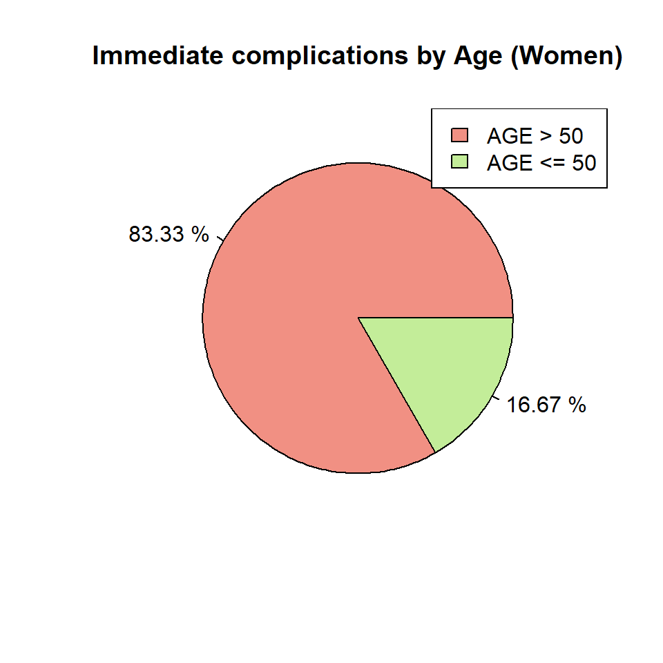
83% of the women that presented complications were over 50 years old. This supports the previous observations that post-menopausal women present a higher risk of developing heart problems.
In this graph we can clearly see that women above 50 years old tend to have more immediate complications. One of the primary reasons is, which is explained in the Procedure Distribution by Age in Women, that these women are post-menopausal which increases the risk of having a cardiovascular disease due to their higher arterial pressure.
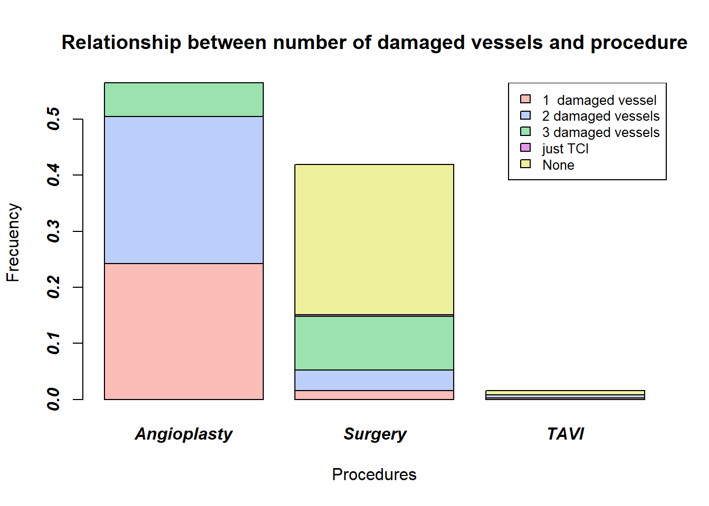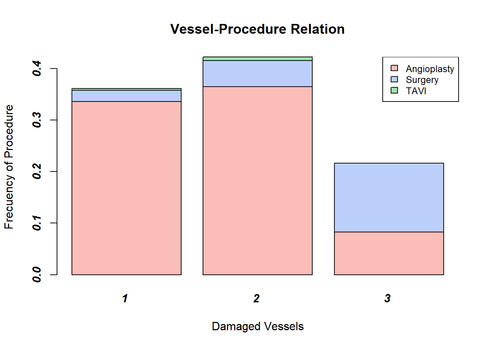
The amount of damaged vessels is related with the hypertency of the patient. A study made in Colombia shows that the more damaged vessels the doctor found on the patient, the more complicated the procedure could become and will have a higher risk of becoming an unsuccessful procedure. Therefore, as long as the damaged vessels increased the most common procedure would be a surgery because it’s survival rate is higher than an angioplasty. On the other hand, the study also proves that patients with 1 or 2 damaged vessels have a higher survival rate if the procedure used is an angioplasty because it’s not as invasive as a surgery.
The article´s information supports the graph shown, which leads us to reaffirm the idea that angioplasty is the most common procedure regarding one or two damaged vessels.
Fernandez, A., Restrepo, R., Villa, P., Garces, J., & Montero, G. (2009). Coronary angioplasty with stenting vs. coronary bypass revascularization surgery in multivessel disease. Revista Colombiana de Cardiologia. Published.
| Successful angioplasty | Unsuccessful angioplasty | No angioplasty |
|---|---|---|
| 50% | 9.38% | 40.62% |
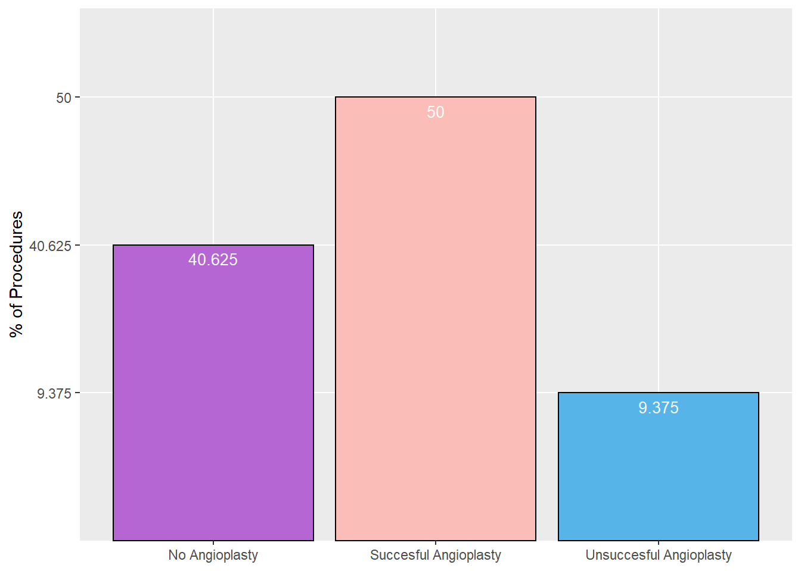
As shown in the previous information, there is a standard idea that angioplasty is the most common procedure among patients with damaged vessels. This is why we decided to evaluate the success of an angioplasty in patients with total chronic occlusion. But first of all, let us define what is a total chronic occlusion. Coronary chronic total occlusions are commonly encountered complex lesions identified in 15% of all patients referred for coronary angiography. Chronic total occlusions are typically characterized by thrombolysis in myocardial infarction with 0 flow for at least 3 months.
When it comes to percutaneous coronary intervention (angioplasty), there are several complications linked to it. Maybe this is the reason why some professionals choose not to perform it, as shown in the table that 40% of the procedures do not follow angioplasty as their main action. Nevertheless, The field of coronary interventions has advanced tremendously in the last 2 decades and is particularly evident with regard to chronic total occlusion in percutaneous coronary intervention. There are vast improvements in the procedure’s safety and initial success as well as a better understanding of its benefits and patient suitability. It has been described that the procedure offers symptomatic benefits and improves quality of life for patients. The significant improvement in coronary percutaneous coronary intervention success rates is due to a variety of reasons, with the most important being technological advances. Wire designs with higher crossing power lead to higher success rates. Polymer-jacketed wires are used in most cases, including the most successfully crossed cases. Crossing catheters are designed to advance in intimal and subintimal spaces, allowing for subsequent exchange to support wires and, eventually, low-profile balloons. There are primarily four techniques for angioplasty, including antegrade wire escalation, antegrade dissection and reentry, retrograde wire escalation, and retrograde dissection and reentry.
In conclusion, all of this evidence funds the information shown in the graph, which exhibits that angioplasty is a successful procedure for patients with total chronic occlusion. Success rates depend not only on operator experience but also on anatomical features. Length, calcification, tortuosity, and an ambiguous cap are features that will affect initial success rates.
Christofferson RD, Lehmann KG, Martin GV, Every N, Caldwell JH, Kapadia SR.. Effect of chronic total coronary occlusion on treatment strategy. Am J Cardiol. 2005. May
Park SJ. Optimal medical therapy with or without stenting for coronary chronic total occlusion: DECISION CTO. Paper presented at: ACC 2017: 66th Annual Scientific Session 2017 Mar 18; Washington, D.C.
Our objective is to be able to predict the procedure prescribed to a patient based on some of the patient’s medical profile. First we selected some of the variables we had previously worked with in our analysis of the dataset. We had concluded that the sex and age of our patients, whether the patient suffered from diabetes, and the number of dammaged heart vessels, were some of the most important factors when it came to deciding between angioplasty or surgery as the best suited cardiological intervention.
We decided to use a RandomForest as our model for the predictor, because most of the variables we were treating were categorical instead of continuous. Therefore, we set procedure as our dependent variable, and sex, age, diabetic, and number of damaged vessels as our independent variables.
To apply RandomForest, we needed to factorize all of our variables and make sure there were no NA values. We also split our dataset 80:20: using 80% of the dataset to build our model on. With our model, we predicted the procedures chosen for the remaining 20% of the dataset, based on the independent variables previously mentioned. We then compared the predictions with the real values. The following confusion matrix summarizes our results:
| PREDICTED | ||
|---|---|---|
| ACTUAL | Angioplasty | Surgery |
| Angioplasty | 40 | 3 |
| Surgery | 3 | 30 |
We can conclude from these results that our model for predicting the procedure done on a cardiology patient has a high level of accuracy: 92.11% of our test sample was predicted accurately.
In order to further measure our model’s performance, we used the following AUROC curve:
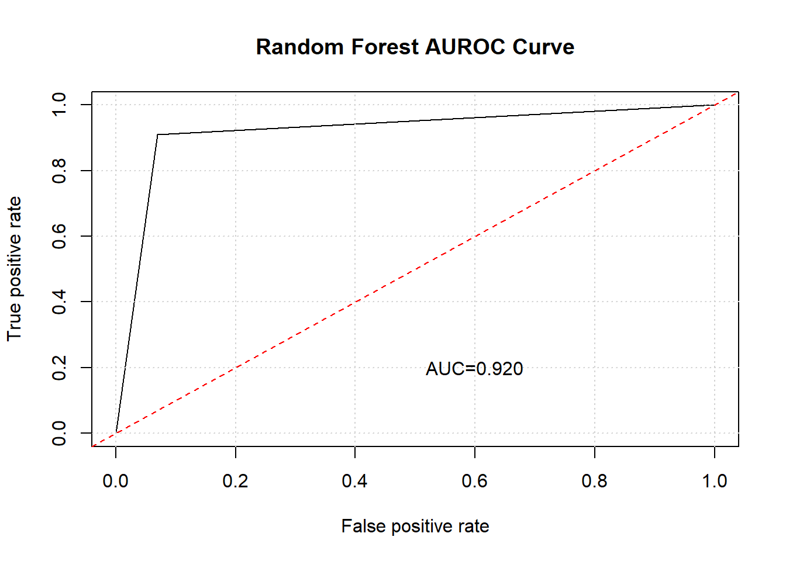
| Variable Importance | |
|---|---|
| Number of damaged vessels | 8 1.5 |
| Gender | 4.3 |
| Age | 4.1 |
| Diabetes | 3.1 |
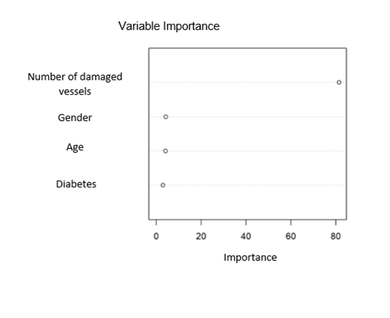
Our AUC value (area under the curve) is 0.920, which confirms that our model has a good measure of separability. This means that our model is good at distinguishing between patients that would undergo angioplasty and those that would undergo surgery.
Delving deeper into our model, we wanted to analyze the net impact that each variable had in predicting the procedure done on a patient. From the table below, we can conclude quite clearly that the most significant factor by far is the number of damaged vessels the patient has. From our previous analysis we had surmised that the number of damaged vessels is indeed an important factor, but we had also seen evidence for sex, age, and diabetes. These results seem to suggest that although they are relevant, the number of damaged vessels is in the end the most determining factor.
To conclude, our model can predict, with 92% accuracy, the type of procedure a cardiology patient would undergo given their sex, age, diabetic history and the number of damaged vessels. However, it is important to point out that these results are based on a relatively small sample, and further studies would have to be made to reach any conclusions.
Christofferson RD, Lehmann KG, Martin GV, Every N, Caldwell JH, Kapadia SR.. Effect of chronic total coronary occlusion on treatment strategy. Am J Cardiol. 2005. May
Park SJ. Optimal medical therapy with or without stenting for coronary chronic total occlusion: DECISION CTO. Paper presented at: ACC 2017: 66th Annual Scientific Session 2017 Mar 18; Washington, D.C.
Fernandez, A., Restrepo, R., Villa, P., Garces, J., & Montero, G. (2009). Coronary angioplasty with stenting vs. coronary bypass revascularization surgery in multivessel disease. Revista Colombiana de Cardiologia. Published
Wild S, Roglic G, Green A, Sicree R, King H. Global prevalence of diabetes: estimates for the year 2000 and projections for 2030. Diabetes Care. 2004.
Aguirre F, Brown A, Cho NH, Dahlquist G, Dodd S, Dunning T, Hirst M, Hwang C, Magliano D, Patterson C. IDF Diabetes Atlas. 2013.
American Diabetes Association. Economic costs of diabetes in the U.S. In 2007. Diabetes Care
D.M.S., & D.J.Z. (2010). Hipertensión en la Mujer. Sociedad Argentina de Hipertensión Arterial. Published.
https://www.ncbi.nlm.nih.gov/pmc/articles/PMC5880561/#i1947-6094-14-1-50-b4